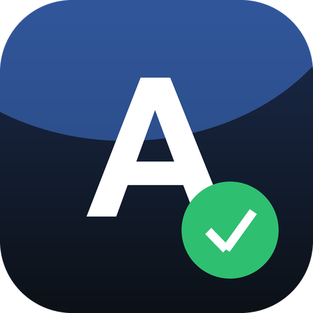

Приложение само проверяет новые версии и показывает баннер «Доступна версия N»: нажимаете — файл скачивается и сразу открывается установщик. Данные при обновлении сохраняются.
Данные хранятся на телефоне, поэтому раз в месяц сохраняйте копию: кнопка «Сохранить копию» создаёт один файл — отправьте его себе в облако или мессенджер. На новом телефоне достаточно открыть этот файл.